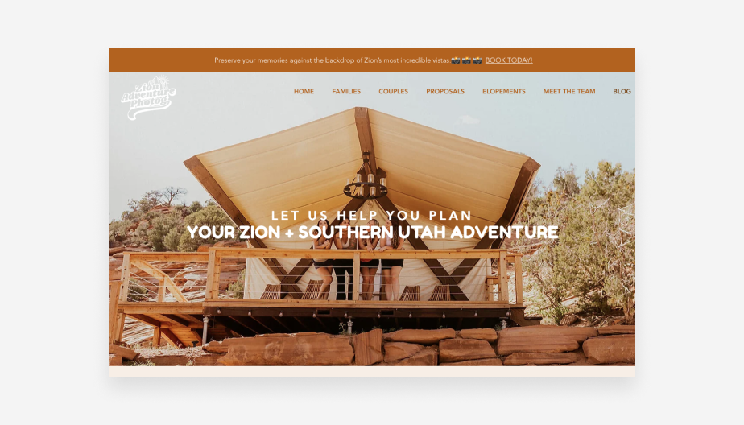
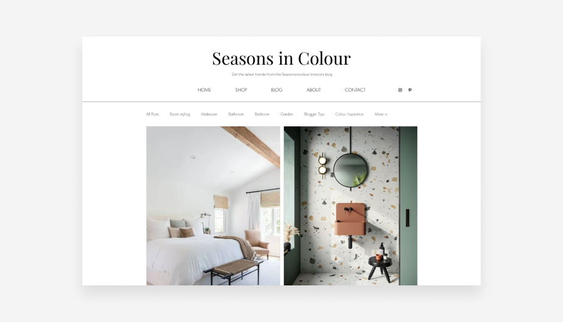

Blog post 1:
Best photography blog: Zion Adventure Photography
The Zion Adventure Photog blog establishes owner Arika as an expert of both photography and Zion National Park. The blogs rugged, playful color scheme of brown and gold evokes nature and sunshine. Its homepage features visual testimonials of happy clients enjoying their adventures. Arika embeds her Instagram Feed directly onto her site, spreading the word about her service and drawing people deeper into her brand through social media marketing.

Citation: Emily Shwake, "22 of the best blog examples in 2023 that'll inspire your blogging journey" Aug 3
Available at: https://www.zionadventurephotog.com/
Blog Post 2:
Best interior design blog: Seasons in Colour
Jenny Kakoudakis interior design blog, Seasons in Colour, equips professional designers with educational content—all within a sophisticated, tasteful and user-friendly site. In fact, it earned an Amara Interior Blog Award back in 2016.
The first fold of the site is a full-bleed image of the feature story. The secondary feature appears on a black background, which breaks up the design of the site while calling attention to an article that Jenny is particularly proud of. To monetize the blog, she built a shopping page full of affiliate links.

Citation:Emily Shwake, "22 of the best blog examples in 2023 that'll inspire your blogging journey" Aug 3
Available at: https://www.seasonsincolour.com/